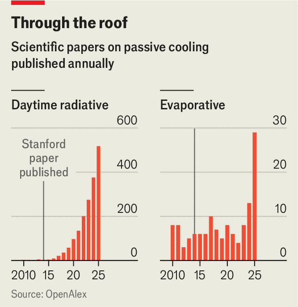

How to cool buildings on the cheap
New paints promise to get rid of heat without using energy

Sep 10th 2026
London buses have a cool secret. Viewed from above they are often white, not red. This heat-reduction measure, which began in 2004 with the intention of making journeys more comfortable for passengers—particularly those on the top deck—was complete by 2020. But buses still struggle to cope with rising temperatures, and 2025 saw a record number of heat-related customer complaints.
Part of the answer may be to make them even whiter. A group at University College, London (UCL), led by Ioannis Papakonstantinou, has painted the tops of two buses with material that reflects 93% of sunlight. Commercial white paint manages 84%. The difference might sound small, but it takes the new coating over a crucial threshold: the point at which it emits more heat than it absorbs from the sun.
Terrestrial objects shed about 100W per square metre of surface area. The sun heats Earth at ten times that rate. Reflect nine-tenths of incoming solar radiation and the paint breaks even. Reflect more and it can, in principle, cool what it is covering down below the temperature of the surrounding air. Since the paint reflects a roughly constant fraction of sunlight, the advantage is greatest when the sun is strongest.
In practice passengers are still unlikely to be cooler in such a bus than outside it. The rest of the vehicle’s surface will continue to absorb heat. But the improvement should be measurable. In an experiment in Madrid, which has yet to be peer-reviewed, Dr Papakonstantinou and his colleagues found that their version kept surfaces up to 8°C cooler than standard white paint.

Interest in radiative coatings, as these materials are known, has been growing steadily since 2014 (see chart). That was when a team at Stanford University, led by Aaswath Raman, first showed that a material could chill itself below the temperature of its surroundings, without expending energy, while in direct sunlight . “This may be the start of something really cool,” The Economist wrote at the time.
Some of the ingredients used by the Stanford researchers—silver and hafnium dioxide—were too expensive for mass production, and their method of layering these substances using “electron beam evaporation” was hard to replicate in commercial settings. Moreover, the resulting surfaces reflected light back directly, like a mirror, so the idea of coating roofs with the material was not entirely attractive.
Twelve years on, however, radiative coatings are coming to market. And not a moment too soon. Climate change makes space-cooling increasingly necessary. It accounted for 10% of the world’s electricity use in 2025, up from 6% in 1990. Air-conditioning units often employ gases with 2,000 times the global-warming potential of carbon dioxide. And, as they work by pumping heat out of buildings, air-conditioners help create urban “heat islands”.
The immediate target is therefore clear. Roofs, which absorb around 90% of incoming sunlight, constitute more than a fifth of the surface area of some American cities. Painting them with the new coatings could thus have a dramatic effect on electricity consumption.
In the longer run, though, it is among those living in poorer, often tropical countries, where the power required to run air-conditioning is unavailable or unaffordable, that need is greatest. The average number of heat-related deaths per year increased by 63% in the decade leading up to 2021 compared with that leading up to 1999, with the rate highest in places that can afford air-conditioning least.
The secret of radiative cooling lies in materials that treat visible and infrared light differently. At any given wavelength, a substance can be a good emitter or a good reflector, but not both. Yet to cool below the temperature of its surroundings, an object must reflect energy from the sun while emitting its own pent-up heat.
Fortunately for material scientists, the wavelengths at which objects radiate depends on their temperature. At 5,500°C, the sun radiates mostly at those short wavelengths to which, by no coincidence, human eyes have evolved to be sensitive. Terrestrial objects such as London buses, by contrast, have temperatures in the low tens of degrees Celsius and therefore emit longer-wavelength infrared rays.
The group at UCL exploits this difference by mixing particles of aerogel—a sponge made of silica—into a carefully selected polymer. Differences between the refractive indices of the aerogel and the polymer, and the fact that the aerogel particles have dimensions similar in size to the wavelength of light, both cause incoming light rays to pinball off the aerogel particles, giving the paint its high reflectivity.
Meanwhile, silicon-oxygen chemical bonds in the aerogel and carbon-oxygen bonds in the polymer both radiate at a wavelength of around nine microns, to which the atmosphere is transparent. That permits the paint to shed heat directly into outer space. The result is a diffuse white surface that looks like ordinary white paint but reflects almost as much energy as the mirror-like coating created by the Stanford group. And it is a lot cheaper. All the constituents, says Dr Papakonstantinou, are commercially available. So making the stuff at scale would cost roughly as much as existing high-end paints.
His group’s work is not yet ready for mass production, but other radiative coatings are already on sale. Some firms, such as AkzoNobel, a Dutch paintmaker, are going down the aerogel route. Others, like i2Cool, a company in Hong Kong, include particles made of a variety of materials in a range of sizes to do the reflecting. In combination, these turn back more wavelengths of sunlight than do the titanium-oxide particles employed in ordinary white paint. i2Cool says that it has covered 850,000 square metres of buildings with its coatings—an area equivalent to 119 football pitches—and thus avoided 14,000 tonnes of air-conditioning-related carbon-dioxide emissions.
Yet another approach is to add the power of evaporation to the process. A cement-based mixture, detailed in Science last year by Fei Jipeng of Nanyang Technological University in Singapore and his colleagues, has a porous structure that can absorb water. By adjusting the formulation and the ratio of water to cement, Dr Fei and his team were able to make a coating with pores around a micron in diameter, allowing it to absorb rainwater by capillary action. When this evaporates it carries away heat, cooling the structure it is covering in a manner similar to a person shedding heat by sweating. It is then replenished the next time rain falls.
Salt added to the cement enhances the process by attracting water vapour and thus allowing the coating to absorb moisture directly from humid air, even in the absence of rain. And, like the UCL group’s aerogel, the pores in the cement scatter light rather than absorbing it.
In a trial, Dr Fei’s material stayed 5°C cooler than a standard radiative coating, and saved up to 40% more energy when applied to an air-conditioned building. And, cement being cheap, it costs a thirtieth as much as radiative-cooling paint. Which is, as it were, the coolest thing of all. ■